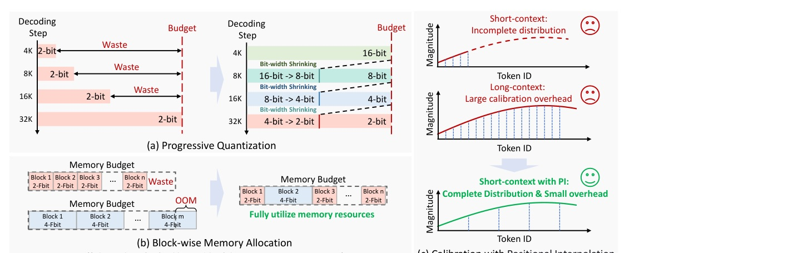
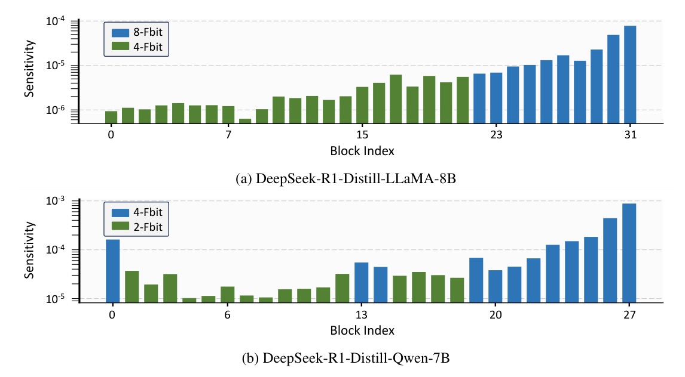

A practical KV-cache compression method for reasoning models: spend memory early, spend more bits on sensitive blocks, and make short calibration see long RoPE phases.
PM-KVQ treats long-CoT cache compression as a memory scheduling problem, not only a quantizer choice.
It keeps early KV cache at higher precision, lowers bit-width only when the memory budget is full, allocates bits by layer sensitivity, and uses positional interpolation for cheaper long-context calibration.
Use all available memory before accepting low-bit damage.

| strategy | AIME pass@1 | Voting |
|---|---|---|
| Direct Right Shift | 12.08 | 23.33 |
| Modified Right Shift | 28.75 | 46.67 |
| Equivalent Right Shift | 38.33 | 66.67 |
DeepSeek-R1-Distill-LLaMA-8B, 4-bit KV cache.

| dimension | setting |
|---|---|
| Calibration | RedPajama arXiv subset; 512 samples x 2,048 tokens; s=4; α grid size 20 |
| Benchmarks | AIME-2024/2025, CMIMC-2024, LiveCodeBench Jan-Apr 2025; max output 32,768 tokens |
| Models | DeepSeek-R1-Distill Qwen/LLaMA 7B-70B; QwQ-32B |
| Baselines | RotateKV, KIVI, MiKV; KVTuner in appendix |
| Hardware | Fake quantization on 8 x A100-80G for performance experiments |
| method | AIME-2024 | AIME-2025 | CMIMC | LiveCode |
|---|---|---|---|---|
| RotateKV | 0.00 | 0.00 | 0.00 | 0.00 |
| MiKV BS=32 | 0.00 | 0.63 | 2.29 | 5.86 |
| KIVI | 32.08 | 24.58 | 20.83 | 19.00 |
| PM-KVQ BS=32 | 40.21 | 28.96 | 25.83 | 24.71 |
| case | baseline | PM-KVQ | gain |
|---|---|---|---|
| Qwen-7B AIME-2024 | 32.08 | 40.21 | +8.13 pts |
| LLaMA-8B AIME-2024 | 41.25 | 47.71 | +6.46 pts |
| Qwen-14B CMIMC | 27.71 | 47.71 | +20.00 pts |
| LLaMA-70B AIME-2024 | 51.88 | 64.79 | +12.91 pts |
The accuracy gain is mostly from not quantizing too early and not spending bits uniformly.
PM-KVQ can use the same final low-bit target as KIVI, yet produce higher-quality early states and stronger sensitive layers. That is why it can improve pass@1 while staying in the same memory budget.
| model / output | BF16 | KIVI | PM-KVQ | PM-KVQ vs BF16 |
|---|---|---|---|---|
| Qwen-7B · 16K | 101.40 | 506.72 | 424.72 | 4.19x |
| Qwen-7B · 32K | 52.06 | 284.10 | 269.51 | 5.18x |
| Qwen-32B · 16K | 12.34 | 35.65 | 33.74 | 2.73x |
| Qwen-32B · 32K | 8.92 | 31.59 | 30.81 | 3.45x |
PM-KVQ wins because it matches precision timing, layer sensitivity, and RoPE phase coverage to the long-CoT setting.
| calib len | s | effective len | AIME pass@1 | Voting |
|---|---|---|---|---|
| 2,048 | 1 | 2,048 | 46.67 | 60.00 |
| 2,048 | 4 | 8,192 | 48.33 | 60.00 |
| 2,048 | 16 | 32,768 | 46.67 | 53.33 |
| 8,192 | 1 | 8,192 | 48.33 | 60.00 |
| model | QServe calib | PM-KVQ calib | + allocation |
|---|---|---|---|
| Qwen-7B | 52 min | 13 min | 17 min |
| Qwen-32B | 187 min | 44 min | 57 min |
| LLaMA-70B | 408 min | 93 min | 120 min |
Directly applying existing methods to long-CoT LLMs causes significant performance degradation due to ... Large cumulative error ... Short-context calibration.
直接把短上下文 KV 量化方法搬到 long-CoT，會因累積誤差與短校準失配而掉性能。Abstract p.1 lines 21-28
We initially store KV Cache in 16-bit format ... gradually reduce the bit-width ... 16, 8, 4, and 2 bits.
先用 16-bit 存 KV，再在記憶體滿時逐步降到 8/4/2-bit；這是 PM-KVQ 的核心動作。§3.1 p.4 lines 285-289
The lowest frequency sine curve has a period of up to 54,410 tokens.
RoPE 低頻通道的週期可達 54,410 tokens，短校準看不到真實長上下文分佈。§3.3 p.6 lines 421-427
PM-KVQ achieves a 2.73-5.18x throughput improvement over the original 16-bit LLMs.
相比原 16-bit LLM，PM-KVQ 在吞吐上有 2.73-5.18 倍提升。§4.3 p.8-9 lines 887-888
AI Agent frameworks / multimodal systems